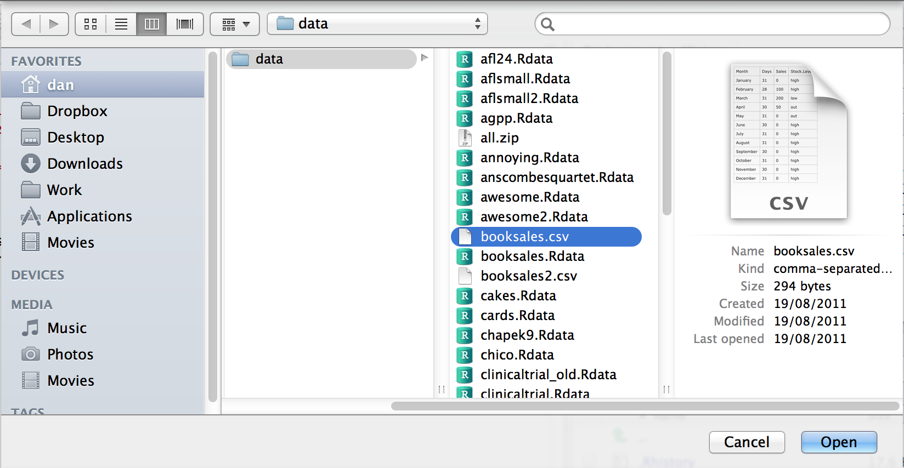
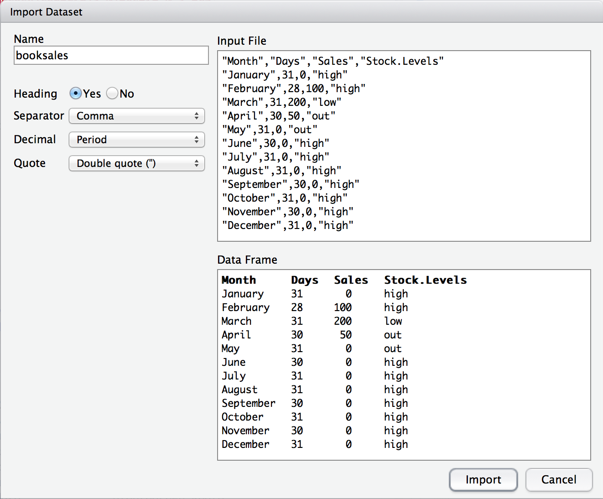
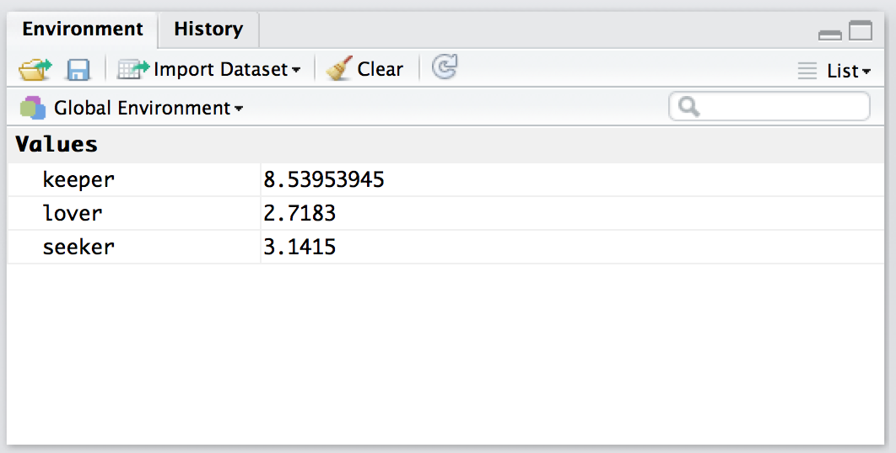

books <- read_csv("./data/booksales.csv")4 Working with Data
4.1 Loading and saving data
There are several different types of files that are likely to be relevant to us when doing data analysis. There are three in particular that are especially important from the perspective of this book:
- Comma separated value (CSV) files are those with a .csv file extension. These are just regular old text files, and they can be opened with almost any software. This means that storing data in CSV files does not tie users to any particular software and keeps things simple.
- Workspace files are those with a .Rdata file extension. This is the standard kind of file that R uses to store data and variables. They’re called “workspace files” because you can use them to save your whole workspace.
4.1.1 Importing data from CSV files using read_csv
One quite commonly used data format is the humble “comma separated value” file, also called a CSV file, and usually bearing the file extension .csv. CSV files are just plain old-fashioned text files, and what they store is basically just a table of data. This is illustrated in Figure Figure 4.1, which shows a file called booksales.csv that I’ve created. As you can see, each row corresponds to a variable, and each row represents the book sales data for one month. The first row doesn’t contain actual data though: it has the names of the variables.

The easiest way to open this file will be to use the read_csv() function. This function is pretty flexible and there are lots of options that you can tweak. For now there’s only a single argument to the function that I’ll mention:
file. This should be a character string that specifies a path to the file that needs to be loaded. You can use an absolute path or a relative path to do so.
Therefore, to import the CSV file, the command I need is:
There are two very important points to notice here. First, notice that I didn’t try to use the load() function, because that function is only meant to be used for .Rdata files. If you try to use load() on other types of data, you get an error. Second, notice that when I imported the CSV file I assigned the result to a variable, which I imaginatively called books file. There’s a reason for this. The idea behind an .Rdata file is that it stores a whole workspace. So, if you had the ability to look inside the file yourself you’d see that the data file keeps track of all the variables and their names. So when you load() the file, R restores all those original names. CSV files are treated differently: as far as R is concerned, the CSV only stores one variable, but that variable is big table. So when you import that table into the workspace, R expects you to give it a name. Let’s have a look at what we’ve got:
print(books)# A tibble: 12 × 4
Month Days Sales Stock.Levels
<chr> <dbl> <dbl> <chr>
1 January 31 0 high
2 February 28 100 high
3 March 31 200 low
4 April 30 50 out
5 May 31 0 out
6 June 30 0 high
7 July 31 0 high
8 August 31 0 high
9 September 30 0 high
10 October 31 0 high
11 November 30 0 high
12 December 31 0 high You can instead open the data in RStudio’s spreadsheet viewer:
View(books)The books data set is quite small, so just calling print() is fine. But for larger data sets, the View() and the spreadsheet viewer allows for a more thorough inspection.
Clearly, it’s worked, but the format of this output is a bit unfamiliar. We haven’t seen anything like this before. What you’re looking at is a data frame, which is a very important kind of variable in R, and one I’ll discuss at length in Chapter 6. For now, let’s just be happy that we imported the data and that it looks about right.
Note
In a lot of books you’ll see the read.table() or read.csv() functions used for this purpose instead of read_csv(). They’re similar functions, but read_csv() is a function from the readr package, one of the many packages that make up “the tidyverse”. The tidyverse is a set of interoperable packages we will be using throughout this course. Further information about the tidyverse can be found in Chapter 5.
4.1.2 Alternative CSV importation
Warning
As detailed above, read_csv() is how we will import CSV data files into R. This section details an alternative way to import CSV data files, but it will not produce the same kind of variable. Using RStudio’s built-in “Import Dataset” functionality will produce a dataframe, whereas read_csv produces a “tibble”. We will Further information about the difference between plain dataframes and tibbles can be found in Chapter 6.
In the environment panel in RStudio you should see a button called “Import Dataset”. Click on that, and it will give you a couple of options: select the “From Text File…” option, and it will open up a very familiar dialog box asking you to select a file: if you’re on a Mac, it’ll look like the usual Finder/Explorer window that you use to choose a file. I’m assuming that you’re familiar with your own computer, so you should have no problem finding the CSV file that you want to import! Find the one you want, then click on the “Open” button. When you do this, you’ll see a window that looks like the one in Figure 4.2.

The import data set window is relatively straightforward to understand.

In the top left corner, you need to type the name of the variable you R to create. By default, that will be the same as the file name: our file is called booksales.csv, so RStudio suggests the name booksales. If you’re happy with that, leave it alone. If not, type something else. Immediately below this are a few things that you can tweak to make sure that the data gets imported correctly:
- Heading. Does the first row of the file contain raw data, or does it contain headings for each variable? The
booksales.csvfile has a header at the top, so I selected “yes”. - Separator. What character is used to separate different entries? In most CSV files this will be a comma (it is “comma separated” after all). But you can change this if your file is different.
- Decimal. What character is used to specify the decimal point? In English speaking countries, this is almost always a period (i.e.,
.). That’s not universally true: many European countries use a comma. So you can change that if you need to. - Quote. What character is used to denote a block of text? That’s usually going to be a double quote mark. It is for the
booksales.csvfile, so that’s what I selected.
One nice thing about the RStudio window is that it shows you the raw data file at the top of the window, and it shows you a preview of the data at the bottom. If the data at the bottom doesn’t look right, try changing some of the settings on the left hand side. Once you’re happy, click “Import”. When you do, two commands appear in the R console:
booksales <- read.csv("./data/booksales.csv")
View(booksales)The first of these commands is the one that loads the data. The second one will display a pretty table showing the data in RStudio.
Note, however, that this variable looks a bit different from the sales variable we created using read_csv. This is because RStudio has used read.csv() rather than read_csv() as we did in the previous section. Again, the differences will be discussed more in Chapter 6.
4.1.3 Loading workspace files using R
When I used the list.files() command to list the contents of the data directory, the output referred to a file called booksales.Rdata. Let’s say I want to load the data from this file into my workspace. The way I do this is with the load() function. There are two arguments to this function, but the only one we’re interested in is
file. This should be a character string that specifies a path to the file that needs to be loaded. You can use an absolute path or a relative path to do so.
Using the absolute file path, the command would look like this:
load( file = "/home/christian/Documents/teaching/statslab/data/booksales.Rdata" )but this is long and ugly. Given that the working directory is /home/christian/Documents/teaching/statslab, I could use a relative file path, like so:
load( file = "./data/booksales.Rdata" )Another strategy would be to first change the working directory to whatever directory contains the desired file (setwd() or Session->Set Working Directory) and then load the file using only the file name (e.g., load(file = "booksales.Rdata")). This may seem tempting, but we will avoid doing this because changing the working directory can be confusing if you’re not paying close attention. Instead, we will assume that a) our working directory is the “statslab” directory we created previously (Section 5.4) and b) all of our data files (CSVs and workspaces) are located in the “data” subdirectory. Outside of this class, however, you may not be able to move data files and/or R scripts. In such cases, it may be easier to modify the working directory. Just be aware that you may need to change the working directory both before and after loading the desired file(s). Don’t get lost (you can always figure out what the current working directory is with getwd())!
4.1.4 Loading workspace files using RStudio
Okay, so how do we open an .Rdata file using the RStudio file panel? It’s terribly simple. First, use the file panel to find the folder that contains the file you want to load. If you look at Figure Figure 4.3, you can see that there are several .Rdata files listed. Let’s say I want to load the booksales.Rdata file. All I have to do is click on the file name. RStudio brings up a little dialog box asking me to confirm that I do want to load this file. I click yes. The following command then turns up in the console,
load("./data/booksales.Rdata")and the new variables will appear in the workspace (you’ll see them in the Environment panel in RStudio, or if you type who()). So easy it barely warrants having its own section.

4.1.5 Saving a workspace file using save
Not surprisingly, saving data is very similar to loading data. Although RStudio provides a simple way to save files (see below), it’s worth understanding the actual commands involved. There are two commands you can use to do this, save() and save.image(). If you’re happy to save all of the variables in your workspace into the data file, then you should use save.image(). And if you’re happy for R to save the file into the current working directory, all you have to do is this:
save.image( file = "myfile.Rdata" )Since file is the first argument, you can shorten this to save.image("myfile.Rdata"); and if you want to save to a different directory, then (as always) you need to be more explicit about specifying the path to the file. Suppose, however, I have several variables in my workspace, and I only want to save some of them. For instance, I might have this as my workspace:
who()
## -- Name -- -- Class -- -- Size --
## data data.frame 3 x 2
## handy character 1
## junk numeric 1 I want to save data and handy, but not junk. But I don’t want to delete junk right now, because I want to use it for something else later on. This is where the save() function is useful, since it lets me indicate exactly which variables I want to save. Here is one way I can use the save function to solve my problem:
save(data, handy, file = "myfile.Rdata")Importantly, you must specify the name of the file argument. The reason is that if you don’t do so, R will think that "myfile.Rdata" is actually a variable that you want to save, and you’ll get an error message. Finally, I should mention a second way to specify which variables the save() function should save, which is to use the list argument. You do so like this:
vars_to_save <- c("data", "handy") # the variables to be saved
save( file = "booksales2.Rdata", list = vars_to_save ) # the command to save them4.1.6 Saving a workspace file using RStudio
RStudio allows you to save the workspace pretty easily. In the environment panel (Figure 4.4) you can see the “save” button. There’s no text, but it’s the same icon that gets used on every computer everywhere: it’s the one that looks like a floppy disk. You know, those things that haven’t been used in about 25 years.

Alternatively, go to the “Session” menu and click on the “Save Workspace As…” option. This will bring up the standard “save” dialog box for your operating system. Type in the name of the file that you want to save it to, and all the variables in your workspace will be saved to disk. You’ll see an R command like this:
save.image("~/Desktop/Untitled.RData")Pretty straightforward, really.
4.2 Exercises
- Download data (see Appendix A)
- Inside the “statslab” directory/folder you created at the end of Section 5.4, create a sub-directory/folder and name it “data”
- Unzip the data files and place them in the “data” directory/folder you just created
- Open NBA data file (
nba_all_seasons.csv) in your favorite spreadsheet software (e.g., Microsoft Excel). - Briefly review the content of this file.